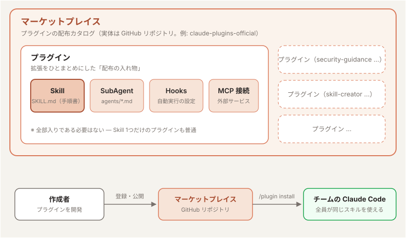
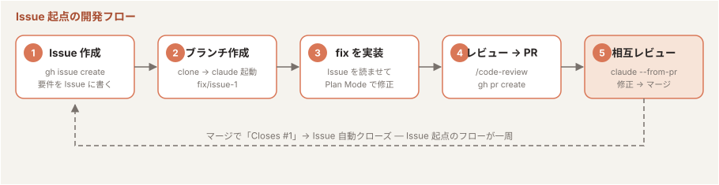

第3回：Claude Code を使ったチーム開発
「個人の使いこなしをチームの標準にし、コンテキストを管理して長く走る」
1到達目標・時間配分
到達目標
- CLAUDE.md / Skills / settings をチームで共有・運用できる
/context/compact/clearを使い分けてコンテキストを管理できる- Issue 起点のチーム開発フロー（Issue → ブランチ → fix → レビュー → PR → マージ）を Claude Code で回せる
時間配分（60分）
| # | 内容 | 時間 |
|---|---|---|
| 1 | オープニング（到達目標・時間配分の説明） | 5分 |
| 2 | チームでの CLAUDE.md 運用 | 10分 |
| 3 | Skills の共有 | 10分 |
| 4 | コンテキスト管理 | 12分 |
| 5 | 実践：チーム開発フロー | 12分 |
| 6 | 実践：チーム開発フローの自動化 | 6分 |
| 7 | まとめ・コース総括 | 5分 |
2チームでの CLAUDE.md 運用（10分）
2-1. 共有の基本方針（5分）
<repo>/CLAUDE.mdを リポジトリにコミット してチーム全員で共有する- 個人の好み（エディタ設定・出力スタイル等）は
CLAUDE.local.mdか~/.claude/CLAUDE.mdへ - CLAUDE.md の変更も PR でレビュー する — 「Claude への指示」はチームの規約そのもの
2-2. 運用のアンチパターン（5分）
| アンチパターン | 対策 |
|---|---|
| 何でも書いて肥大化 | 定期的に棚卸し。コードから分かることは消す |
| 個人ルールの混入 | CLAUDE.local.md に分離 |
| 書いたきり更新しない | 規約変更・構成変更と同じ PR で更新 |
3Skills の共有（10分）
3-1. 共有できるもの（4分）
| 対象 | 配置場所 | 共有方法 |
|---|---|---|
| Skills | .claude/skills/ | リポジトリにコミット |
| Hooks・パーミッション設定 | .claude/settings.json | リポジトリにコミット |
| 個人用設定 | .claude/settings.local.json | git 管理外 |
3-2. チームでの活用例（3分）
- テスト生成の手順を
/test-genスキルとして共有 → テスト観点の平準化 PostToolUseでリンタを強制 → 「Claude が書いてもチーム標準のコード」を担保- 新メンバーのオンボーディング：
claudeを起動して「このプロジェクトの開発の流れを教えて」
演習1
第2回で作った test-gen スキルをコミットし、隣の受講者のリポジトリで動かしてもらう
3-3. プラグイン（3分）
Skills / Hooks / 設定を まとめて配布できる単位 が プラグイン。.claude/ への手動コミットより、バージョン管理・更新が楽で、マーケットプレイス経由で導入できる。

- Skill ＝ 手順書の最小単位（
SKILL.md）。プラグインに同梱して配布できる - プラグイン ＝ Skills・SubAgent・Hooks・MCP 接続を ひとまとめにした配布の入れ物
- マーケットプレイス ＝ プラグインの 配布カタログ（実体は GitHub リポジトリ。例:
claude-plugins-official） - 共有の流れ：作成者がプラグインをマーケットプレイスに登録 → 利用者は
/plugin marketplace addで登録 →/plugin installで導入
セキュリティレビューを自動化する security-guidance プラグイン
公式マーケットプレイス（claude-plugins-official）の security-guidance プラグインは、Claude が行う各変更を脆弱性観点でレビューし、見つけた問題を同じセッション内で修正させる。チーム全員が入れておけば、誰が書いても一定のセキュリティ水準が担保される。
基本インストール
Claude Code のセッション内で以下を実行する:
/plugin install security-guidance@claude-plugins-official
マーケットプレイスが見つからない場合は、先に登録する:
/plugin marketplace add anthropics/claude-plugins-official
インストール後、現在のセッションに即時適用する:
/reload-plugins
- user スコープ を選ぶと、同一マシンのすべてのセッションで自動的に読み込まれる
/pluginを実行すると、Discover / Installed / Marketplaces / Errors のタブでプラグインを管理できる
チーム・プロジェクト全体への適用
リポジトリに .claude/settings.json を追加すると、そのリポジトリをクローンした全員に自動適用される:
{
"enabledPlugins": {
"security-guidance@claude-plugins-official": true
}
}
- Claude Code on the Web（クラウドセッション）では user スコープのプラグインが引き継がれない ため、プロジェクト設定（上記）への記述が必要
- 組織全体に展開する場合は、管理者が マネージド設定 で
enabledPluginsを設定する
4コンテキスト管理（12分）
4-1. なぜ管理が必要か（3分）
- コンテキストウィンドウは 有限（トークン上限がある）
- 埋まると自動コンパクション（要約圧縮）が走り、細部の情報が失われる
- 長いセッションで「さっき言ったことを忘れる」のは大半これが原因
主要モデルのコンテキストウィンドウ
| モデル | コンテキストウィンドウ | 最大出力 |
|---|---|---|
| Claude Fable 5 | 100万トークン | 128K |
| Claude Opus 4.8 | 100万トークン | 128K |
| Claude Sonnet 5 | 100万トークン | 128K |
| Claude Haiku 4.5 | 20万トークン | 64K |
- コンテキストウィンドウ ＝ モデルが一度に扱える情報量の上限。会話履歴だけでなく、CLAUDE.md・読み込んだスキル・ツールの実行結果もすべてここを消費する
- 上限はモデルごとに異なり、大きいモデルでも「無限」ではない
4-2. 3つのコマンド（5分）
| コマンド | 動作 | 使いどころ |
|---|---|---|
/context | 現在のコンテキスト使用量を可視化 | 長い作業の途中で残量チェック |
/compact | 会話を要約して圧縮（指示も添えられる） | 作業は続けたいが残量が心配なとき |
/clear | コンテキストを完全リセット | 別タスクに切り替えるとき |
/compact 実装方針とテスト結果は残して、探索の過程は要約して
4-3. 運用のコツ（4分）
- 1タスク1セッション が基本 — タスクが変わったら
/clear - 大事な決定事項は
#で CLAUDE.md に書き出してから/clearする（外部メモリ化） - コンパクションに頼るより、自分で要点を保存して新しいセッションを始める ほうが品質が安定する
演習2
/context で現在の使用量を確認 → /compact を指示付きで実行 → 使用量の変化を見る
5実践：チーム開発フロー（12分）
題材：チーム共有のリポジトリ（例：第2回で使った agmsg の fork から1つ選ぶ）に対して、Issue 起点の開発フロー を一周する。

5-1. gh で Issue を作成（2分）
「README に日本語のクイックスタートを追記してほしい」という Issue を gh で作成して
gh issue createが実行される — タイトル・本文も Claude が整えてくれる- Issue 本文がそのまま Claude への要件になる — 再現手順や期待動作を丁寧に書くほど後工程の精度が上がる
5-2. clone してブランチを作成（2分）
チームのリポジトリを clone し、Issue 対応のブランチを切る。
$ git clone <チームのリポジトリURL> $ cd <リポジトリ名> $ claude
Issue #1 に対応するブランチを切って
gh issue view 1で内容を確認し、fix/issue-1のようなブランチが作られる
5-3. Issue に対する fix を実装（3分）
Issue #1 を読んで、Plan Mode で対応方針を立ててから修正して
- Claude が Issue 本文を読み、計画を提示 → レビューして承認 → 実装 → テスト
- 人間は 計画と差分のレビュー に集中する
5-4. スキルでレビューして PR を作成（2分）
push する前に、組み込みスキルで自己レビューする。
/code-review
指摘があれば修正してから PR を作成：
Issue #1 を closes する PR を作成して
- PR 本文に
Closes #1が入り、マージすると Issue が自動クローズ される
5-5. 他の人の PR をレビューしてマージ（3分）
受講者同士で PR 番号を交換し、互いの PR をレビューする。claude --from-pr <N> で PR の文脈（差分・説明文・レビューコメント）を読み込んだ状態 でセッションを開始できる。
$ claude --from-pr <N> # N はレビューする PR 番号
/review
- 指摘があれば PR にコメントを残す（「レビュー結果を PR にコメントして」）
- PR の作者は
claude --from-pr <自分のPR番号>で起動し、「レビューコメントに対応して」→ 修正 → push - 問題がなくなったらマージ：
この PR をマージして
gh pr mergeが実行され、Closes #1により Issue も自動クローズ — Issue 起点のフローが一周 する
6実践：チーム開発フローの自動化（6分）
5章で回した「Issue 起点の開発フロー」は毎回同じ手順の繰り返し — つまり スキル化の好対象。フロー全体を1つのスキルに落とし込み、1コマンドで回せるようにする。
issue-flow というスキルを作って。Issue 番号を引数で受け取り、
1. gh issue view で Issue の内容を確認
2. fix/issue-<番号> ブランチを作成
3. Plan Mode で対応方針を立ててから修正を実装
4. /code-review でレビューし、妥当な指摘を修正
5. コミットして PR を作成（本文に Closes #<番号> を入れる）
という手順にして。
作成できたら、新しい Issue を1つ作って実行してみる:
/issue-flow 2
- 定型フローをスキル化すれば、チームの誰でも同じ品質のフローを1コマンドで再現 できる
.claude/skills/issue-flow/をコミットすれば、3章で学んだとおりチーム全員に共有される
✓まとめ・コース総括（5分）
第3回のまとめ
- CLAUDE.md・Skills・settings は リポジトリにコミットしてチームの資産 にする
- コンテキストは有限 —
/contextで監視し、/compactと/clearを使い分ける - 人間の仕事は 計画のレビューと差分のレビュー に寄っていく
コース総括
| 回 | 身につけたこと |
|---|---|
| 第1回 | エージェントの仕組み・基本コマンド・ソースコード解析 |
| 第2回 | CLAUDE.md / Skills / Hooks・安全なコード変更の進め方 |
| 第3回 | チームでの共有・コンテキスト管理・PR ベースの開発フロー |